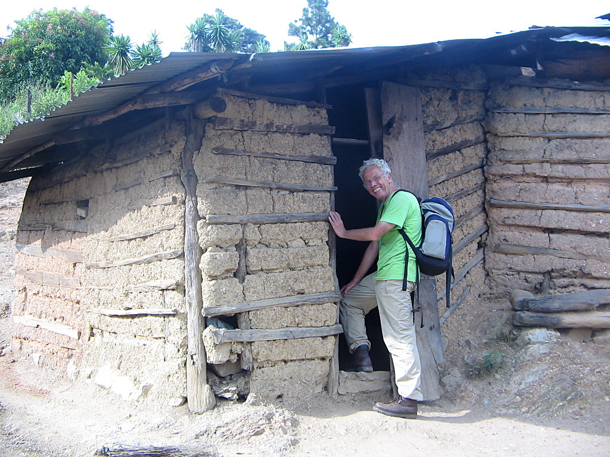
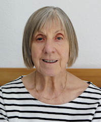
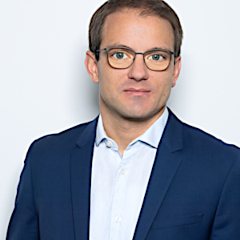

Dr. Egon Bantel
Dr. Egon Bantel (1947-2010) war ein deutscher Arzt. Er studierte Pädagogik und
Humanmedizin und arbeitete als Dermatologe in verschiedenen Kliniken und in
eigener Praxis. Seine Haltung und sein Handeln waren geprägt von der
Überzeugung, dass Helfen und Teilen dem Menschen inhärente Verpflichtung sind.

Die Erfahrungen seines Lebens, in besonderem Maße auch die als Arzt auf den
Philippinen (2007) und in Nicaragua (2008), führten ihn zu der Einsicht, dass
Hilfe letztlich nur dann eine dauerhafte Chance hat, wenn sie Selbsthilfe
möglich macht. Wie umfassend der Zugang zu Bildung ein Leben positiv verändern
kann, hat er während seines eigenen Lebens auch an sich selbst erfahren.
In dem Wunsch und der Hoffnung, etwas von ihm und seiner Haltung über seinen
Tod hinaus wirken zu lassen, wurde 2017 diese Stiftung gegründet.
Die Stiftung
Die Dr.-Egon-Bantel-Stiftung wurde 2017 von Frau Dr. Ursula Bantel-Schaal ins
Leben gerufen. Sie ist eine Treuhandstiftung des Vereins
Gemeinsam gegen Armut auf den Philippinen (GGAP) e.V.
Das Ziel der Stiftung ist es, den Verein GGAP e.V. in seiner Arbeit langfristig
zu unterstützen und damit benachteiligte Jugendliche auf den Philippinen zu
fördern und ihnen nachhaltig eine Perspektive für ein besseres Leben zu
ermöglichen. Sämtliche Erlöse der Stiftung fließen ohne Abzüge für Verwaltung
o.ä. dem Verein zu, welcher die Mittel wiederum quasi zu 100 % vor Ort einsetzt.
Mit einer Zustiftung können Sie diese Arbeit nachhaltig sichern, Ihr Geld für
lange Zeit für etwas mehr Chancengerechtigkeit in unserer Welt arbeiten lassen.
Stiftungskonto:
Kontoinhaber: Dr.-Egon-Bantel-Stiftung
IBAN: DE60 3706 0193 6006 4210 14
BIC: GENODED1PAX
Pax-Bank, Köln
Wenn Sie eine Spendenbescheinigung wünschen, geben Sie bitte als Verwendungszweck Ihre
Adresse an.
Bei Interesse, Neugier und Fragen wenden Sie sich bitte an den Stiftungsrat:
stiftungsrat@bantelstiftung.de.
Der Stiftungsrat
Der Vorstand der Dr.-Egon-Bantel-Stiftung:

Dr. Ursula Bantel-Schaal
geb. 1943 in Haubersbronn (Baden-Württemberg)
Biochemikerin, Dozentin i. R.
Stiftungsgründerin

Dr. Tobias Piniek
geb. 1977 in Berlin (Ost)
Lehrer, Wiesbaden
Vorsitzender des Stiftungsrates

Wolfgang Bantel
geb. 1952 in Oberurbach (Baden Württemberg)
Fachkraft für Arbeitssicherheit, Dipl. Ing. (FH) i. R., Remstal
Feb Spinner
Ralf Kientopp
Der Verein
Der Verein “Gemeinsam gegen Armut auf den Philippinen (GGAP) e.V.” fördert die
Berufsausbildung von jungen Menschen auf den Philippinen, um ihnen eine
Perspektive heraus aus der Armut zu bieten. Spendengelder werden zu 100 Prozent
für die Auszubildenden vor Ort verwendet.
Der GGAP e.V. ging hervor aus einer privaten Initiative des Medizinstudenten und
heutigen Arztes Sebastian Spinner, der seit 2001 den Ärmsten der Welt mit
Spendengeldern Schul- und Berufsausbildungen ermöglichte.
www.gemeinsam-gegen-armut.org
Impressum
Dr.-Egon-Bantel-Stiftung
Treuhandstiftung des Gemeinsam gegen Armut auf den Philippinen (GGAP) e.V.
stiftungsrat@bantelstiftung.de
Kontaktperson für diese Website
Priv.-Doz. Dr. Daniel Kraus
c/o GGAP e.V.
Bitburger Str. 27
13051 Berlin
(0 61 07) 7 56 88 40
d.kraus@ggap-ev.org
Quellennachweis
Fotos mit freundlicher Genehmigung von Dr. Ursula Bantel-Schaal.
Hintergrundbild: Chocolate Hills, Philippinen von Jacky Lo, geladen
von Unsplash.
Diese Website verwendet das von Seth McLeod für Hugo angepasste
Design “Dimension” von HTML5 UP unter den Bedingungen der
Creative-Commons-Lizenz.
Datenschutzerklärung
Diese Website erhebt und verarbeitet keine personenbezogenen Daten.